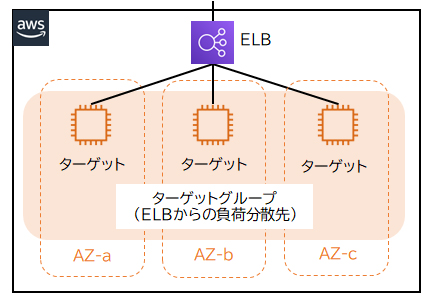
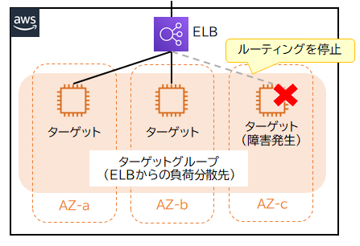
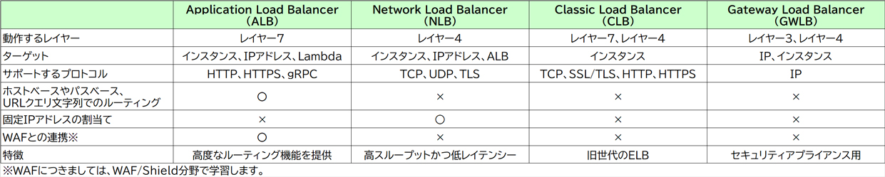

⚖️ ELB（Elastic Load Balancing） CLF SAA
サービスの利用者が増えると、単一のリソースでは全てのリクエストを処理しきれなくなり、応答の遅延が起こります。 ELB（Elastic Load Balancing）は、AWSが提供するマネージド型の負荷分散サービスです。 複数のリソース（ターゲット）にリクエストを分散させ、特定のAZで障害が発生しても他のAZで処理が継続できます。
ELBの基本概念
🎯 ターゲット（振り分け先）
ELB配下の負荷分散先リソース。EC2インスタンス、IPアドレス、Lambda関数を指定できます。一つのELB配下で管理されるターゲットのセットを「ターゲットグループ」といいます。
❤️ ヘルスチェック
ELBはターゲットグループ内の各ターゲットが正常に動作しているかを定期的にヘルスチェックで確認します。ターゲットから正常に応答してくれれば、ELBはそのターゲットへのルーティングを継続します。異常と判断された場合は除外されます。
ELBの種類 — どれを選ぶ？
flowchart TD
Start([ロードバランサーを選ぶ]) --> Q1{プロトコルは？}
Q1 -->|HTTP / HTTPS / gRPC| Q2{高度なルーティングが
必要か？} Q1 -->|TCP / UDP / TLS| NLB[⚡ NLB\nNetwork Load Balancer\nレイヤー4\n超高スループット・低レイテンシ\nElastic IP割当可能] Q1 -->|サードパーティ
セキュリティ機器を
経由させたい| GWLB[🛡 GWLB\nGateway Load Balancer\nレイヤー3+4\nファイアウォール/IDS/IPS向け] Q2 -->|パス/ホスト/URL/ヘッダー
ベースのルーティング必要| ALB[🌐 ALB\nApplication Load Balancer\nレイヤー7\nコンテナ・マイクロサービス向け] Q2 -->|レガシーシステムのみ| CLB[⚠️ CLB\nClassic Load Balancer\n非推奨・旧世代] style ALB fill:#0073BB,color:white style NLB fill:#7C3AED,color:white style GWLB fill:#EF4444,color:white style CLB fill:#6B7280,color:white
必要か？} Q1 -->|TCP / UDP / TLS| NLB[⚡ NLB\nNetwork Load Balancer\nレイヤー4\n超高スループット・低レイテンシ\nElastic IP割当可能] Q1 -->|サードパーティ
セキュリティ機器を
経由させたい| GWLB[🛡 GWLB\nGateway Load Balancer\nレイヤー3+4\nファイアウォール/IDS/IPS向け] Q2 -->|パス/ホスト/URL/ヘッダー
ベースのルーティング必要| ALB[🌐 ALB\nApplication Load Balancer\nレイヤー7\nコンテナ・マイクロサービス向け] Q2 -->|レガシーシステムのみ| CLB[⚠️ CLB\nClassic Load Balancer\n非推奨・旧世代] style ALB fill:#0073BB,color:white style NLB fill:#7C3AED,color:white style GWLB fill:#EF4444,color:white style CLB fill:#6B7280,color:white
各ロードバランサーの詳細


🌐 ALB（Application Load Balancer）— レイヤー7
- HTTP / HTTPS / gRPC ベースのルーティング
- ホストベースルーティング: `www1.example.com` → サーバー1、`www2.example.com` → サーバー2
- パスベースルーティング: `/web1/` → サーバー1、`/web2/` → サーバー2
- URLクエリ文字列: `?lang=jp` → 日本語サーバー、`?lang=en` → 英語サーバー
- コンテナ（ECS）やマイクロサービスアーキテクチャに最適
⚡ NLB（Network Load Balancer）— レイヤー4
- TCP / UDP / TLS ベースのルーティング
- 超高スループット（数百万パケット/秒）・低レイテンシ
- Elastic IPアドレスの割り当てが可能（固定IP）
- ゲームサーバー・IoT・証券取引など超低レイテンシ要件
🛡 GWLB（Gateway Load Balancer）— レイヤー3+4
- すべてのIPパケットを透過的に処理
- サードパーティのファイアウォール・IDS/IPS・侵入防止システムをデプロイ・スケーリング・管理
- セキュリティ製品（外部ベンダー）をトラフィックに組み込む用途
⚠️ CLB（Classic Load Balancer）— レイヤー4+7（非推奨）
旧世代のELBのため、機能や柔軟性の観点からALBやNLBの利用が推奨されています。
ELB比較表

| 比較項目 | ALB | NLB | GWLB | CLB |
|---|---|---|---|---|
| OSIレイヤー | L7（アプリ） | L4（トランスポート） | L3+L4 | L4+L7 |
| プロトコル | HTTP/HTTPS/gRPC | TCP/UDP/TLS | すべてのIP | TCP/SSL/HTTP/HTTPS |
| 高度ルーティング | ◎ パス/ホスト/URL | △ なし | △ | △ |
| 固定IP | ✕ | ◎ Elastic IP可 | ✕ | ✕ |
| 主な用途 | Webアプリ・マイクロサービス | 超低レイテンシ・固定IP | セキュリティ製品挿入 | レガシー（非推奨） |
🔶 試験のポイント（CLF・SAA 頻出）
- パスベース・ホストベースルーティング → ALB（HTTP/HTTPSベース）
- 超低レイテンシ・固定IPが必要 → NLB（TCP/UDPベース）
- サードパーティのファイアウォール/IDS経由 → GWLB
- ELBはAuto Scalingと組み合わせて使うのが定番アーキテクチャ
- ELB自体もマルチAZ構成で動作し、高可用性が確保されている
- Global AcceleratorはELBを背後に置いたうえで固定IPを付与できる